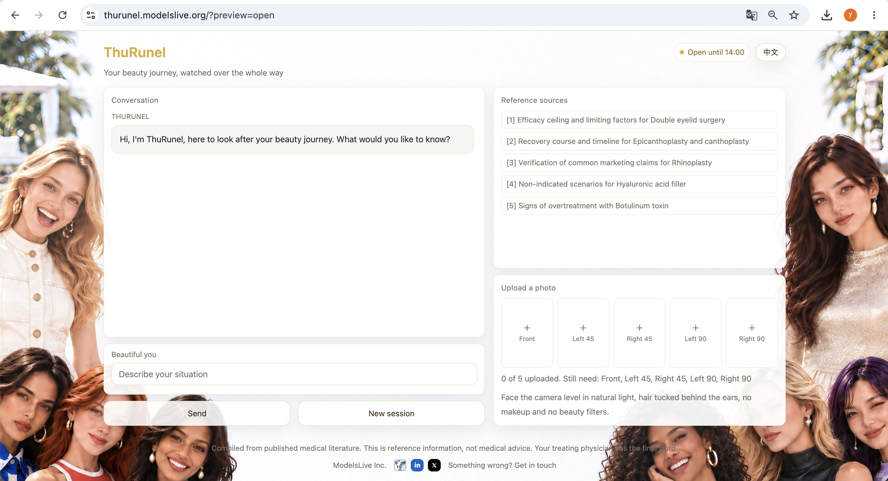
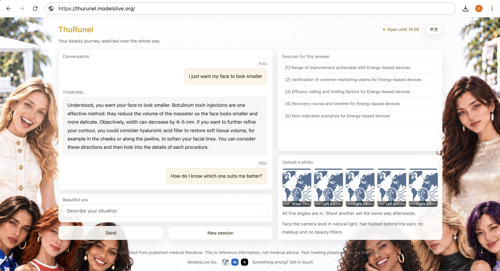
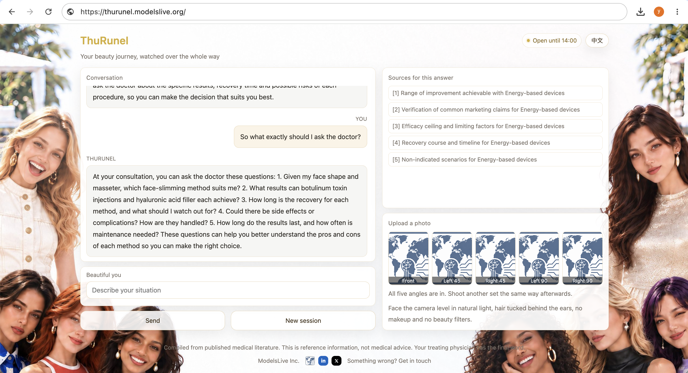
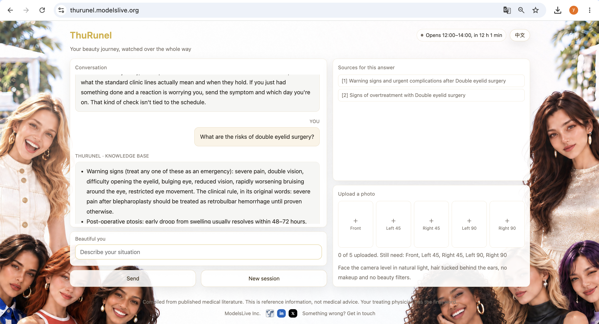

ThuRunel Is Now Live
ThuRunel is now officially live. Open https://thurunel.modelslive.org to start using it.

ThuRunel is an AI Copilot that walks with you through every stage of high-stakes professional decisions. Its first field of application is medical aesthetics.
Why start with medical aesthetics
Medical aesthetics involves costly decisions whose results are hard to reverse, and the people making them often have the least information. Many walk into a clinic with only a vague feeling that they don't look good enough, without being able to say where the problem actually lies. Consultation time is limited, and a single short conversation is rarely enough to sort out what you really want. Before making the decision, few people can help you judge calmly whether a procedure truly makes sense for you.
ThuRunel chooses to stand in that position. It recommends no clinics, doctors, or procedures, and earns nothing from any procedure, which is why it can tell you when something is not worth doing.
What ThuRunel does for you
First, it gets to know your situation. Through a guided self-assessment, ThuRunel helps you locate the problem, for example by measuring a few key dimensions, or by pressing on an area to tell whether its fullness comes from bone or fat. You can also upload photos from five angles as a supplement: front, left and right 45 degrees, and left and right 90 degrees. If you would rather not upload, you can simply keep talking.
Second, it explains the upper bound. Every type of procedure has limits on how much it can improve. ThuRunel tells you where the upper bound lies for the relevant procedures, which improvements are achievable and which are not, helping you set realistic expectations and avoid paying for results that cannot be achieved.

Third, it clarifies the direction. ThuRunel suggests directions for improvement that suit you and lists questions worth asking your doctor at the consultation, so that before you meet the doctor, you already understand what they are going to tell you. It gives no diagnosis or treatment conclusions. The final judgment always stays with the doctor.

ThuRunel's answers are grounded in curated professional sources, and every answer lists the sources actually cited in that turn. When a question goes beyond those sources, such as pricing or a personal treatment plan, it says so directly instead of piecing an answer together.
Two ways to use it
The knowledge base is open around the clock. You can look up at any time what a procedure is, what it can improve, what the risks are, and how long recovery takes. It currently covers common procedures for the eyes, nose, facial contour, and skin, as well as body contouring, and every entry comes with its sources.

Full conversation opens at set times each day, as shown on the page. During open hours, ThuRunel works through the three steps above with you: understanding your situation, explaining the upper bound, and clarifying the direction.
After medical aesthetics
Medical aesthetics is ThuRunel's first proving ground. ThuRunel's conversation flow and its domain knowledge base are independent of each other. Once validated in medical aesthetics, it can move into other decision scenarios that call for professional judgment simply by swapping in a new knowledge base.
Your beauty journey, watched over the whole way.